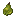

◆
无人之境 nomansland
共 10 个条目 · nomansland
MC百科中文名: 无人之境
MC百科页面: https://www.mcmod.cn/class/19426.html（无人之境 (No Man's Land)）
⚠ 命名空间
nomansland 并未安装于本整合包——此页仅收录其他模组数据（兼容配方/标签等）中引用到的条目，不代表该模组存在。物品与方块

蜜饯梨nomansland:candied_pear · 物品枫糖蜜酒杯
nomansland:maple_mead_bottle · 物品
 枫木篱笆
枫木篱笆nomansland:maple_pickets · 方块枫木格架
nomansland:maple_trellis · 方块
 松木篱笆
松木篱笆nomansland:pine_pickets · 方块松木格架
nomansland:pine_trellis · 方块
 胡桃木篱笆
胡桃木篱笆nomansland:walnut_pickets · 方块胡桃木格架
nomansland:walnut_trellis · 方块
 柳木篱笆
柳木篱笆nomansland:willow_pickets · 方块柳木格架
nomansland:willow_trellis · 方块